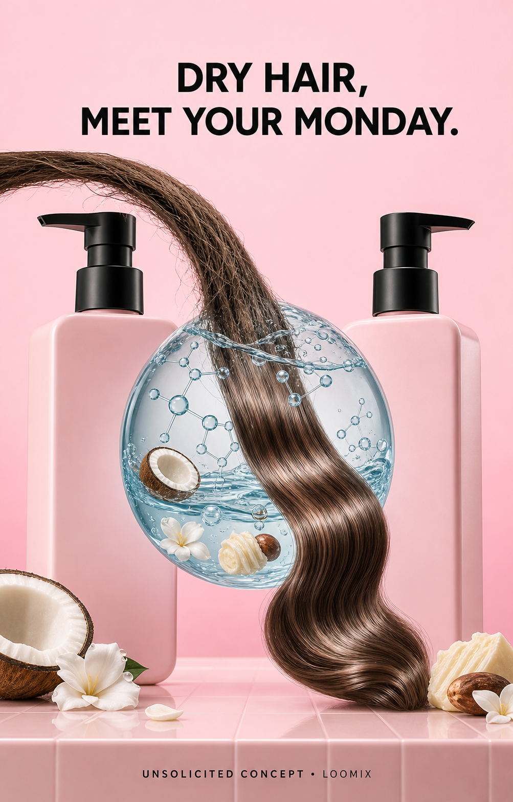

MOISTURE Shampoo + Conditioner — Dry Hair, Meet Your MONDAY
A dry, coarse hair ribbon droops toward a giant clear moisture sphere. After passing through it, the strand becomes soft, smooth, nourished, and shiny—turning the product's hydration story into an instantly readable transformation.
Create with LoomixView official product
Hook options
8-second storyboard
Open on a dry strand drooping like a thirsty leaf.
Reveal the pink shampoo and conditioner bottles.
Suspend a giant transparent moisture sphere.
Pull the strand through its molecular water mesh.
Reveal soft, nourished, reflective waves.
End on the bottles, droplet, hook, and CTA.
Caption direction
Made for rapid testing
Loomix turns one product image into a storyboard, short-video direction, captions, and ready-to-post ad copy.
This is an unsolicited creative concept made by Loomix for demonstration purposes. Loomix is not affiliated with or endorsed by MONDAY Haircare.